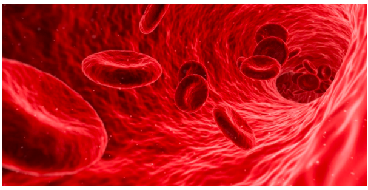

Fungsi Darah

1. Mengangkut oksigen dan karbondioksida dari paru-paru ke seluruh tubuh atau sebaliknya
2. Membawa sari-sari makanan
3. Mengangkut sisa metabolisme
4. Mengedarkan hormon untuk mengatur fungsi dan kinerja tubuh
5. Mengatur keseimbangan pH dan suhu tubuh
6. Melawan penyakit melalui kemampuannya menghasilkan antibodi
Source : Zenius Biologi
|